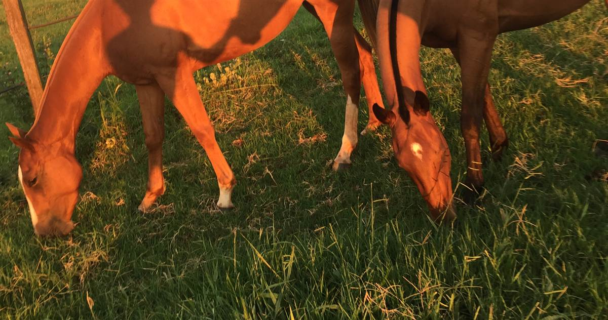

Olá

Todos os quadros são atalhos — clique em qualquer um pra abrir a tela correspondente.
📅 Calendário de Tarefas
Mês
Semana
Dia
Mostra Casco/Dente/Vacina/Vermífugo previstos (calculado a partir da frequência cadastrada de cada animal). Clique num dia ou numa tarefa pra ver os detalhes.
| Nome | Tipo | Acesso |
|---|
| Quando | Quem | O quê | Tela | Registro | Detalhe da alteração |
|---|
O registro começou a partir da atualização que criou esta tela — o que aconteceu antes disso não tem como ser reconstruído. Ficam guardadas cerca das 1.500 ações mais recentes; as mais antigas saem conforme entram novas. O log entra no backup, então exportar de vez em quando guarda o histórico antigo.
Lista
Relatórios
Ativos
Todos os internos
Vendidos
Falecidos
Externos
👁 Só selecionados
| Nome | Sexo | Dt Nasc. | Pai | Mãe | Pelagem | Raça | Categoria | Status | Proprietário | Comprador |
|---|
Lista
Relatório
| Grupo | Qtd. Animais | Observações |
|---|
Histórico
Programação de Manejos
Relatórios
Clique numa linha e use as setas ↑ ↓ pra navegar e espaço pra marcar/desmarcar — igual à seleção de animais.
| Data | Tipo | Subtipo (Casco) | Ferrador | Total ferrageamento (R$) | Total c/ extras (R$) | Deslocamento (R$) | Qtd. Animais | Observações |
|---|
| Data Saída | Origem → Destino | Meio | Motorista | Motivo | Qtd. Animais | Valor Frete | Situação |
|---|
Histórico
Relatórios
| Data | Local | Tipo | Quem treinou | Qtd. Animais | Observações |
|---|
Coberturas
🩺 Visitas / Exames
💉 Protocolo de Vacinas
Relatório
| Matriz | Pai | Receptora | Dt Cobertura | Provável Nascimento | Dt Nascimento | Confirm. | Prenhez | Confirmado | Observações |
|---|
Produtos
Dietas
Movimentações
Relatório
Lista
Visita
Tratamento
| Data | Tipo | Resumo | Animais |
|---|
Lançamentos
🐴 Custo por Animal
Todos os lançamentos
Além do que você lança aqui, a lista já traz sozinha os custos de Manejos (Casco/Dente) e as compras de Estoque — marcados como "Automático", pra você não digitar de novo o que já está cadastrado em outra tela.
| Data | Origem | Tipo | Categoria | Descrição | Valor |
|---|
Cadastro só de identificação. Todo dia 5, o Calendário do Início lembra de confirmar o pagamento do salário de cada funcionário — clique lá pra confirmar (e ajustar o valor se precisar). Outros custos (vale, adiantamento...) entram por "Lançar custo".
| Nome | Documento | Nascimento | Último salário lançado |
|---|
Vamos construir esta tela em seguida
Me envie o print e a explicação dos botões quando quiser seguir com este módulo.